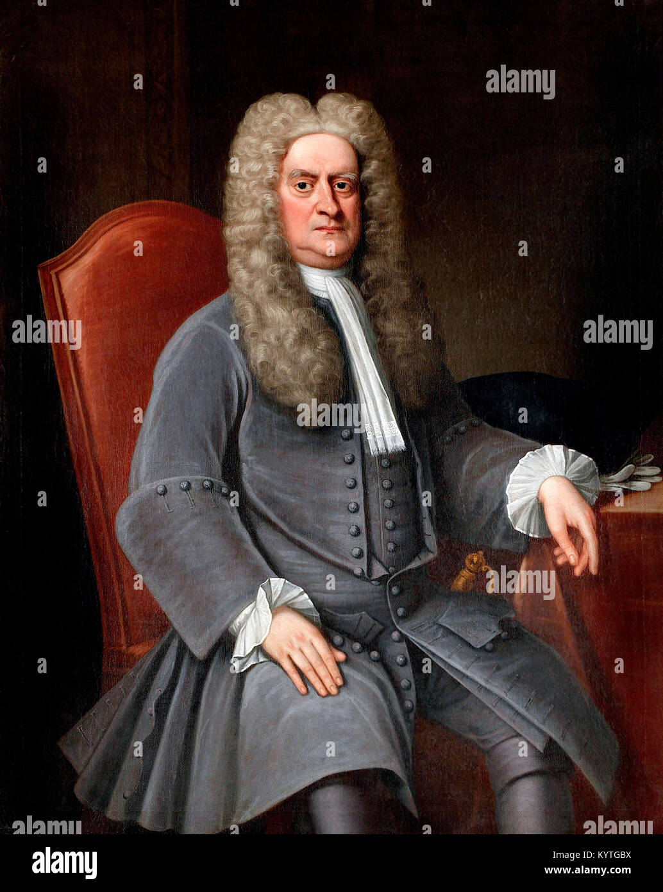

About Sir Issac Newton
Sir Isaac Newton was an English mathematician, physicist, astronomer, and author who is widely recognized as one of the most influential scientists of all time. He made groundbreaking contributions to many areas of science and mathematics, laying the foundation for classical mechanics and modern physics.
Newton's most famous work is his formulation of the three laws of motion, which are now known as Newton's Laws of Motion. These laws describe the relationship between the motion of an object and the forces acting on it, providing a framework for understanding the behavior of objects in motion. His laws are fundamental principles in classical mechanics and are still used today in various fields such as engineering and astronomy..
Newton also developed the mathematical framework of calculus independently of Gottfried Wilhelm Leibniz. His work on calculus provided a powerful mathematical tool for solving problems in physics and engineering, and it remains essential in many scientific disciplines today
In 1687, Newton published his most influential work, "Philosophiæ Naturalis Principia Mathematica" (Mathematical Principles of Natural Philosophy), commonly known as the Principia. In this monumental work, Newton presented his laws of motion and the law of universal gravitation, which describes the gravitational attraction between two objects based on their masses and the distance between them. The Principia laid the foundation for modern physics and revolutionized our understanding of the universe.